la vita etica
Ma cosa vuole dire vivere esteticamente e cosa vuol dire vivere eticamente? Cosa è l’estetica nell’uomo?, e cosa è l’etica? A ciò risponderò: L’estetica nell’uomo è quello per cui egli spontaneamente è quello che è; L’etica è quello per cui diventa quello che diventa.
Il mio nome è Maria Alessandra. Sono nata l'otto ottobre del 1997.
Dopo aver frequentato il liceo scientifico mi sono iscritta al Politecnico di Milano, dove frequento il corso di laurea di Design della Comunicazione
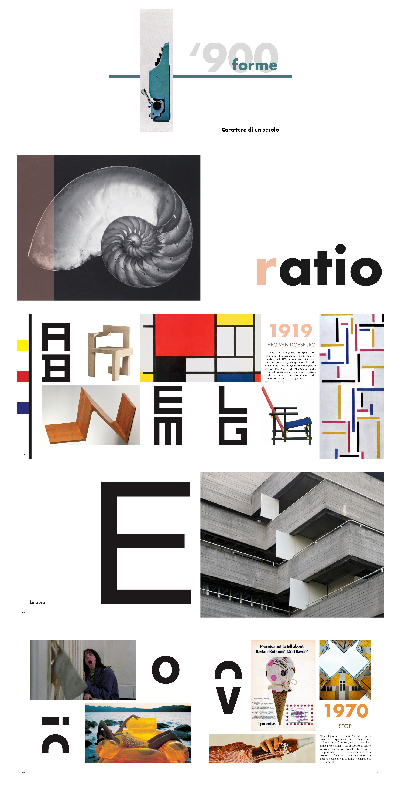
Libro che opera una ricerca iconografica del Novecento strutturata analizzando un espressivo confronto fra le forme tipografiche, quelle architettoniche e i principali avvenimenti storici; realizzato per il laboratorio di Fondamenti del Progetto
realizzato ad aprile 2018
sfoglialo online qui Rivisitazioni dell'opera Il figlio dell'uomo di Magritte realizzata per il laboratorio di disegno
Rivisitazioni dell'opera Il figlio dell'uomo di Magritte realizzata per il laboratorio di disegno
in collaborazione con Fiammetta Morandi
realizzate a gennaio 2018
in collaborazione con Andrea Gaglione e Matteo Pini
realizzate a gennaio 2018
in collaborazione con Andrea Gaglione e Matteo Pini
realizzate a novembre 2017
in collaborazione con Andrea Gaglione e Matteo Pini
realizzate a ottobre 2017
realizzato ad aprile 2018
sfoglialo online qui
Rivisitazioni dell'opera Il figlio dell'uomo di Magritte realizzata per il laboratorio di disegno
in collaborazione con Fiammetta Morandi
realizzate a gennaio 2018
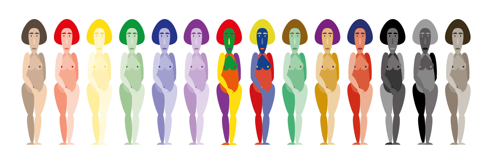 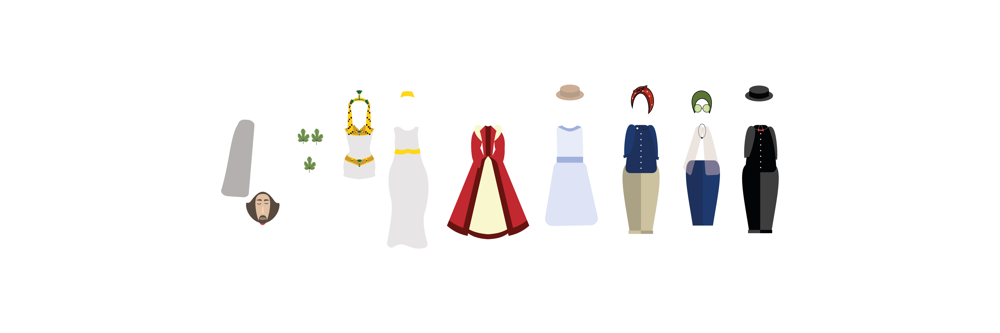 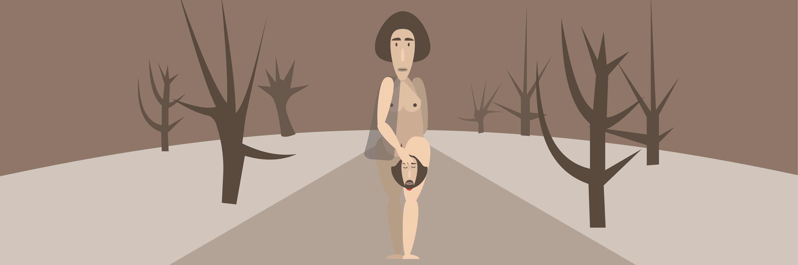 Studio del personaggio di Giuditta, astratto dall'opera di Klimt, realizzato per il laboratorio di disegno
in collaborazione con Andrea Gaglione e Matteo Pini
realizzate a gennaio 2018
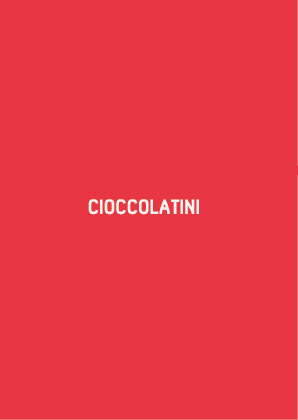 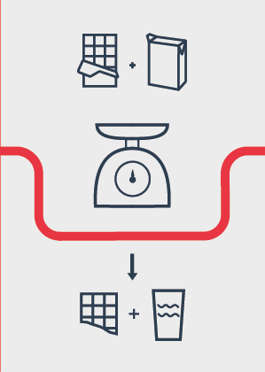 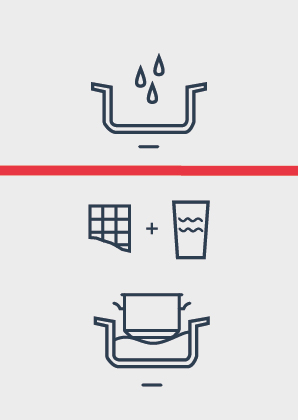 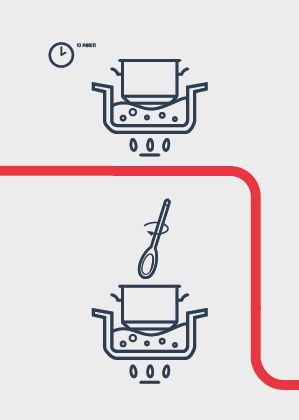 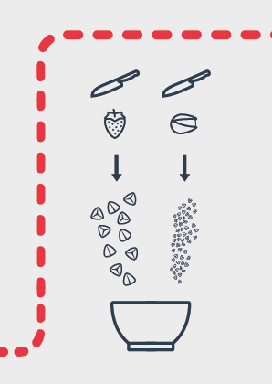 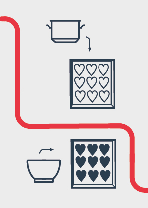 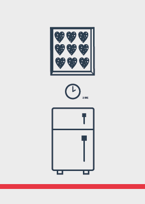 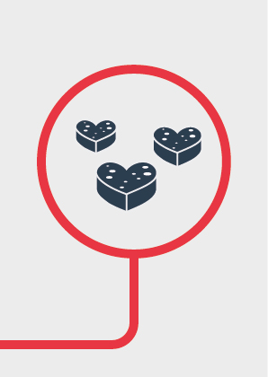 Processo visivo attraverso pittogrammi della ricetta dei cioccolatini realizzata per il laboratorio di Elementi Visivi del progetto
in collaborazione con Andrea Gaglione e Matteo Pini
realizzate a novembre 2017
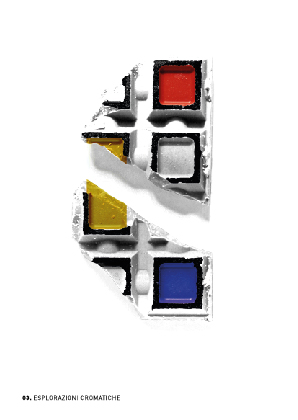 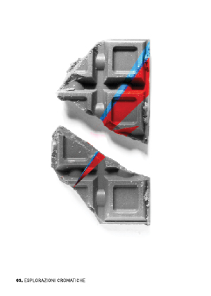 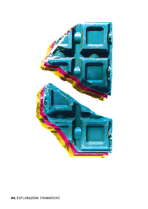 Esplorazione cromatica di un ingrediente realizzate per il laboratorio di Elementi Visivi del progetto
in collaborazione con Andrea Gaglione e Matteo Pini
realizzate a ottobre 2017